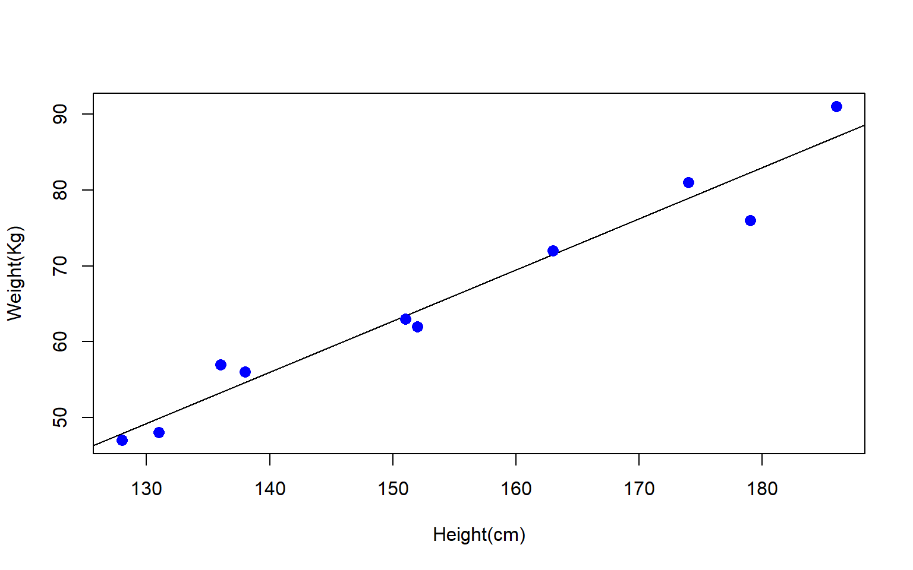
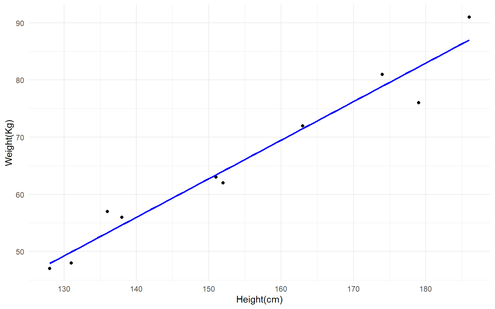

Figure 1 illustrates the scatterplot of the two variables (Weight vs Height) along with a linear regression line and includes summary statistics for the linear regression model including:
Coefficients: Explain the meaning of the slope and intercept in the context of your data.
Significance Levels: Discuss the p-values and what they indicate about the relationships.
R-squared value: Explain how much of the variance in the dependent variable is explained by the model.
Call:
lm(formula = weight ~ height)
Residuals:
Min 1Q Median 3Q Max
-6.3002 -1.6629 0.0412 1.8944 3.9775
Coefficients:
Estimate Std. Error t value Pr(>|t|)
(Intercept) -38.45509 8.04901 -4.778 0.00139 **
height 0.67461 0.05191 12.997 1.16e-06 ***
---
Signif. codes: 0 '***' 0.001 '**' 0.01 '*' 0.05 '.' 0.1 ' ' 1
Residual standard error: 3.253 on 8 degrees of freedom
Multiple R-squared: 0.9548, Adjusted R-squared: 0.9491
F-statistic: 168.9 on 1 and 8 DF, p-value: 1.164e-06

Figure 1: Weight vs Height Linear Regression Model (using plot)
Plotting Linear Regression with plot()
Figure 2 illustrates the same data as Figure 1 but uses ggplot() to plot the output of the model.
Code
# convert to a dataframe to use ggplot()data <-data.frame( height <-c(151, 174, 138, 186, 128, 136, 179, 163, 152, 131), weight <-c(63, 81, 56, 91, 47, 57, 76, 72, 62, 48))# Run linear regressionmodel <-lm(weight~height, data = data)# View the summary of the modelsummary(model)
Call:
lm(formula = weight ~ height, data = data)
Residuals:
Min 1Q Median 3Q Max
-6.3002 -1.6629 0.0412 1.8944 3.9775
Coefficients:
Estimate Std. Error t value Pr(>|t|)
(Intercept) -38.45509 8.04901 -4.778 0.00139 **
height 0.67461 0.05191 12.997 1.16e-06 ***
---
Signif. codes: 0 '***' 0.001 '**' 0.01 '*' 0.05 '.' 0.1 ' ' 1
Residual standard error: 3.253 on 8 degrees of freedom
Multiple R-squared: 0.9548, Adjusted R-squared: 0.9491
F-statistic: 168.9 on 1 and 8 DF, p-value: 1.164e-06
Code
#using ggplotp <-ggplot(data, aes(x = height, y = weight)) +geom_point() +labs(x ="Height(cm)",y ="Weight(Kg)" ) +theme_minimal()# Add the linear regression linep +geom_smooth(method ="lm", se =FALSE, color ="blue")

Figure 2: Weight vs Height Linear Regression Model (using ggplot)